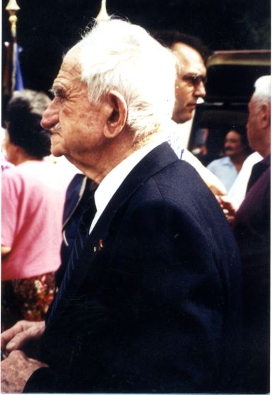
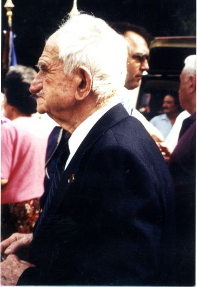

Marcel Lajou est né le 21 mai 1902 à Saint-Martin-Lys (photo de l'acte de naissance à rajouter). Il est le fils de l'instituteur du village. Sa mère Louise décède le 27 juin 1908.
Marcel Lajou est breveté mécanicien d’aéronautique le 25 novembre 1923 et devient pilote en avril 1927. En 1929 un survol de Quillan à basse altitude lui vaudra huit jour d'arrêt pour s'être détourné de son vole. Officier de l’armée de l’air sorti du rang (lieutnant), il effectue des missions en Afrique du Nord. Il devient instructeur à Istres, Bordeaux Mérignac, Salon-de-Provence et Mont-de-Marsan où il forme de nombreux pilotes.
En 1940, après la défaite, replié en Afrique du Nord, quand il lui sera ordonné d'aller bombarder des bases alliés en Méditéranée, il refusera de voler et se met en congé. Il reviendra à Quillan en 1941.
En disponibilté de l'armée, Marcel Lajou entre dans la résistance quelque temps après l’arrestation de Raoul de Volontat pour réorganiser le réseau à Quillan. Il prend le pseudonyme de "Bayard", la marque de son stylo... Ses instructions au réseau India 'Quillan) sont transmis par l'intermédiaire de Jean Bourrel. Les équipes reconstituées sont beaucoup mieux cloisonnées, il forme des dizaines de nouveaux partisans dont son fils André Lajou, agent de liaison du maquis de Picausel. Il participe à la libération de la Haute Vallée Quillan, Limoux et Carcassonne, se retrouve à la tête de l’aérodrome de Lézignan, puis prend un temps le commandement du 3e bataillon du 81e RI.

Réunion avec Lucien Maury et le commandant Lajou vers 1981

Le Commandant Lajou qui décore André Cutzach
Photos transmises par Marc Belli 
